콘티 · 작화 지시서
1~2화 컷별 연출
Claude가 쓴 컷 지시(구도·연기·빛·손 처리·말풍선 자리)와 실제 생성된 그림, 그리고 식자한 대사를 연재 순서대로 나열했습니다. 작화 이미지 65장(2컷을 한 장에 그린 이미지 포함). 검수에서 걸린 27컷은 다시 그리거나 부분 수정했습니다.
모든 컷에 공통으로 들어간 화풍 블록
한국 네이버 연재 심리 스릴러 웹툰의 세련된 디지털 작화. 가늘고 선명한 검은 펜 선으로 얼굴과 머리카락을 섬세하게 그린다. 반실사 비율, 디테일한 눈과 속눈썹. 채색은 부드러운 에어브러시 그라데이션: 피부는 맑은 복숭아빛에 볼과 코끝에 옅은 분홍 홍조, 그림자는 차가운 라벤더·청보라, 밝은 면은 분홍빛이 도는 흰색, 가장자리에 은은한 빛 번짐. 회색으로 칙칙하지 않게, 채도를 살짝 낮춘 맑고 차가운 파스텔 색감. 배경은 원근이 맞는 실제 공간이되 디테일을 줄이고 부드럽게 흐린다. 과장된 만화 기호(땀방울 기호, 핏줄 기호, 데포르메, 집중선 남발)는 쓰지 않는다. 해칭·거친 노이즈 없이 깨끗하게.
1화 「해설」
2006년 봄, 4학년 3반. 손부터 드는 진우, 다 안다는 담임, 필통을 쏟는 유리. 학예회 「벌거벗은 임금님」에서 해설을 맡은 세아는 그날, 친구를 하나 고른다.
2026년 10월, 국회 의원회관
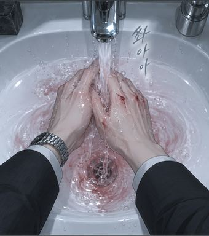
#01 · E1-01 9:16 · 2컷 중 1
탑 앵글 클로즈업. 흰 세면대 위 크롬 수도꼭지에서 물이 쏟아지고, 그 아래 두 손이 서로 비비며 씻고 있다. 흐르는 물이 연한 분홍색으로 물들어 배수구로 소용돌이친다. 오른손 손등 관절 세 곳에 피가 맺힌 긁힌 상처. 화면 위쪽에 차콜 정장 소매 끝과 왼손목의 가는 은색 손목시계. 차가운 형광등 빛.
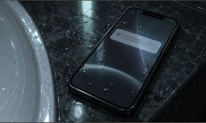
#02 · E1-01 9:16 · 2컷 중 2
어두운 대리석 세면대 가장자리에 놓인 검은 스마트폰의 화면이 켜지며 빛난다. 잠금화면 위쪽에 알림 배너 하나가 떠 있는데, 배너 안은 읽을 수 없는 흐릿한 회색 줄로만 표현한다. 화면 위에 물방울 몇 개. 차가운 청록 빛, 주변은 어둡다.
- 보좌관님 어디 계세요? 의원님 무대 5분 전입니다.
- 지이잉
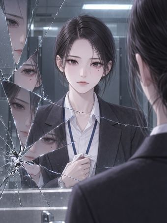
#03 · E1-02F 3:4
거미줄처럼 금이 간 화장실 거울 정면 구도. 충격점은 거울 오른쪽 아래. 갈라진 조각마다 30살 세아의 얼굴이 조금씩 어긋나 비친다. 세아는 거울 속 자신을 정면으로 바라보며 무표정하다. 낮게 묶은 쪽머리에서 머리카락 한 가닥이 이마로 흘러내렸다. 뒤로 흐릿한 화장실 칸막이와 차가운 형광등. 세아의 오른손에는 하얀 손수건이 감겨 있고 가슴 아래에 둔다.
사람들은 나를 / '괜찮은 사람'이라고 불렀다.
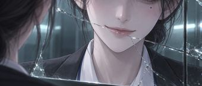
#04 · E1-03F 21:9
가로로 긴 극단적 클로즈업. 금 간 거울에 비친 세아의 코끝부터 턱까지 — 입꼬리가 천천히 올라가 단정하고 완벽한 미소를 만든다. 누드 톤 입술. 거울의 가는 금이 입술 위를 비스듬히 가로지른다. 차가운 청록 빛.
나도 그런 줄 알았다.
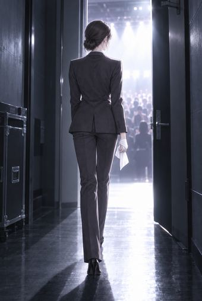
#05 · E1-04R 2:3
어두운 복도 끝에 반쯤 열린 문, 그 틈으로 강렬한 흰 무대 조명이 쏟아져 들어온다. 그 빛을 향해 걸어가는 30살 세아의 뒷모습 실루엣(차콜 정장, 낮은 쪽머리). 오른손에 감은 흰 손수건이 빛을 받아 하얗게 보인다. 바닥에 세아의 긴 그림자. 문 너머로 흐릿한 객석과 박수 치는 사람들의 실루엣.
서른 살이 될 때까지는.
2006년 봄, 해원초등학교
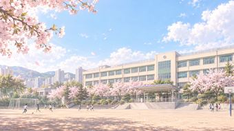
#06 · E1-05 16:9
2006년 봄, 경기도 신도시의 한국 초등학교 전경. 크림색 4층 학교 건물과 초록 창틀, 넓은 흙 운동장, 구령대, 활짝 핀 벚나무, 멀리 뛰어노는 아이들 몇 명(작게). 하늘색 하늘에 흰 구름, 따스한 봄볕.
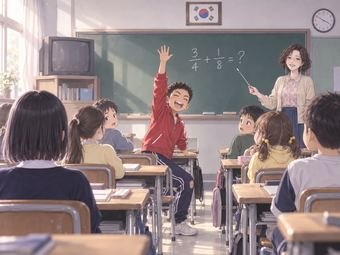
#07 · E1-06 4:3
2006년 한국 초등학교 교실을 교실 뒤쪽에서 칠판 쪽으로 바라본 구도. 초록 칠판 위 가운데에 태극기 액자, 칠판 오른쪽 위 벽시계, 교실 앞 구석 선반의 브라운관 TV, 나무 상판에 철제 다리인 1인용 책상들. 칠판 가운데에 분필로 큼직하게 분수 문제가 쓰여 있다. 칠판 옆에서 정미란 선생님이 지시봉으로 문제를 가리키며 웃는다. 교실 한가운데에서 진우가 의자에서 반쯤 일어나 오른손을 천장으로 번쩍 뻗고 입을 크게 벌려 외친다. 주변 아이들 몇 명(뒤통수와 옆얼굴, 다양한 색 맨투맨)이 진우를 돌아본다. 창가 맨 뒷자리 근처에 세아의 뒷모습이 작게 보인다(검은 일자 단발, 남색 카디건).
- 자, 이 문제 풀어 볼 사람?
- 저요! 저요!!
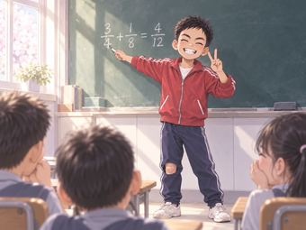
#08 · E1-07A 9:16 · 2컷 중 1
칠판 앞에서 진우가 분필을 든 채 뒤돌아 자신 있게 씩 웃으며 왼손으로 V 사인을 한다. 칠판에는 분수 문제와 그 옆에 진우가 쓴 틀린 답이 보인다. 화면 아래쪽에 앞줄 아이들 두세 명이 입을 가리고 키득거리는 뒤통수와 옆얼굴.
- 어? 아닌가? 헤헤
- ㅋㅋㅋ 또 틀렸대~
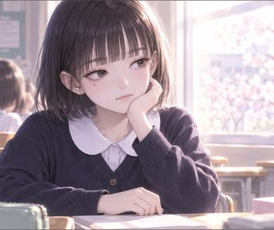
#09 · E1-07 9:16 · 2컷 중 2
창가 자리에 앉은 세아의 미디엄 클로즈업. 책상에 왼손으로 턱을 괸 채, 반쯤 감긴 무심한 눈으로 화면 왼쪽(진우 쪽)을 본다. 표정 없음. 창으로 들어온 봄 햇살 역광에 머리카락 윤곽이 빛난다.
나서는 애들은 멍청하다.
모르면서 손부터 들고, / 틀리면 웃고, / 웃으면 다 괜찮은 줄 안다.
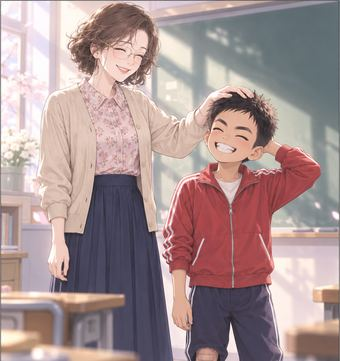
#10 · E1-08 9:16 · 2컷 중 1
칠판 앞. 정미란 선생님이 진우의 머리를 손바닥으로 쓰다듬으며 활짝 웃고, 진우는 머쓱하게 웃으며 뒤통수를 긁는다.
- 괜찮아, 괜찮아. 진우는 용기가 있잖니.
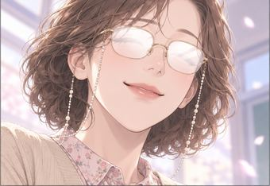
#11 · E1-08 9:16 · 2컷 중 2
정미란 선생님의 얼굴 클로즈업, 살짝 아래에서 올려다본 앵글. 금테 안경알에 창빛이 하얗게 반사되어 눈이 보이지 않는다. 자신만만하고 인자한 미소.
- 선생님은 너희 눈만 봐도 다 알아.
아무것도 모르면서.
아는 척하는 어른과는 / 가까이하지 않는다.
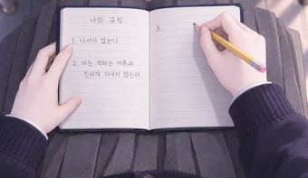
#12 · E1-09B 4:3
위에서 똑바로 내려다본 탑뷰 클로즈업. 회색 주름치마를 입은 무릎 위에 손바닥만 한 남색 하드커버 수첩이 펼쳐져 있다. 펼친 양쪽 페이지는 연한 회색 가로줄만 있는 빈 페이지이고 화면과 평행하게 반듯하다. 세아의 작은 오른손이 노란 연필을 쥐고 오른쪽 페이지 첫 줄에 막 쓰려 한다. 왼손 손끝은 수첩 왼쪽 가장자리를 누른다. 책상 아래라 빛이 조금 어둡다.
규칙은 하나씩 늘어 갔다.
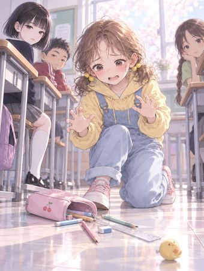
#13 · E1-10R 9:16 · 2컷 중 1
교실 책상 사이 통로. 유리가 필통을 떨어뜨려 연필·지우개·자가 바닥에 흩어진다. 유리는 두 손을 허우적거리며 당황했고 볼이 새빨갛다. 뒤쪽 아이들 두세 명이 귀찮다는 듯 쳐다본다. 바닥에 노란 병아리 모양 지우개가 굴러간다.
- 미, 미안해! 미안…
- 백유리 또야?
- 와르르
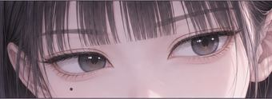
#14 · E1-10 9:16 · 2컷 중 2
가로로 긴 클로즈업: 일자 앞머리 아래 세아의 두 눈만. 가늘게 뜨고 무언가를 관찰하듯 흥미롭게 바라본다. 눈동자에 아주 작은 하이라이트. 오른쪽 눈 아래 작은 점.
쉬운 애는 한눈에 보인다.
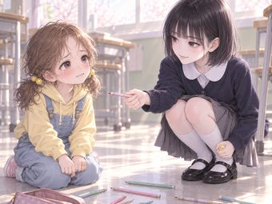
#15 · E1-11 4:3
교실 바닥. 쪼그려 앉은 세아가 연필 한 자루를 유리에게 내밀며 다정하게 웃는다. 유리는 맞은편에 무릎 꿇고 앉아 눈물이 그렁그렁한 눈으로 세아를 올려다본다. 둘 사이 바닥에 흩어진 연필들. 세아의 왼손은 무릎 옆 바닥 가까이에서 노란 병아리 모양 지우개를 손바닥 안에 슬쩍 쥐고 있다(유리에게는 보이지 않는 각도, 독자에게는 보인다). 따뜻한 봄 햇살.
- 괜찮아? 내가 주워 줄게.
- …고마워.
그날, 나는 친구를 골랐다.
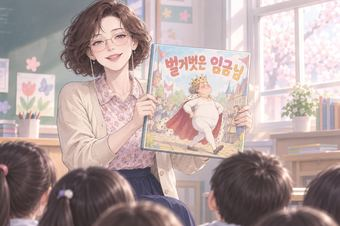
#16 · E1-12 3:2
교탁 앞에서 정미란 선생님이 커다란 그림책을 두 손으로 들어 아이들에게 보여 주며 웃는다. 그림책 표지에는 금관을 쓰고 흰 내복 차림으로 가슴을 펴고 걷는 통통한 임금님 그림과 큼직한 제목. 화면 아래쪽에 아이들 뒤통수 몇 개.
- 이번 학예회 연극은 「벌거벗은 임금님」이에요!
- 이 연극의 교훈은 뭘까요? 바로, 정직이에요.
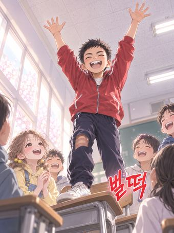
#17 · E1-13 3:4
아래에서 올려다본 역동적인 앵글. 진우가 자기 의자 위에 올라서서 두 팔을 하늘로 번쩍 들고 입을 크게 벌려 외친다, 신이 난 얼굴. 주변 아이들이 박장대소하며 진우를 올려다본다. 교실 형광등과 천장.
- 임금님 할 사람?
- 저요!! 제가 임금님 할래요!!
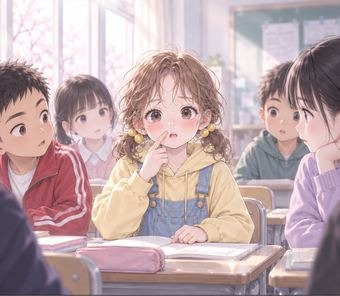
#18 · E1-14 9:16 · 2컷 중 1
자리에 앉은 유리가 오른손 검지로 자기 얼굴을 가리키며 눈이 동그래져 놀란다. 볼이 빨갛다. 주변 아이들이 유리를 본다.
- 그리고 '임금님은 벌거벗었어요!' 하고 외치는 아이는… 유리가 해 볼까?
- 제, 제가요?
- 유리는 거짓말을 못 하는 얼굴이잖니.
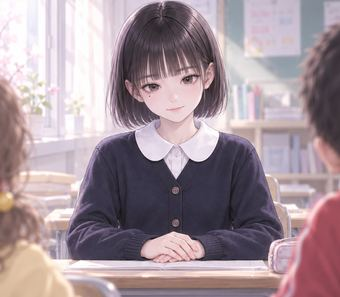
#19 · E1-14 9:16 · 2컷 중 2
세아가 자리에 바르게 앉아 두 손을 책상 위에 가지런히 모으고, 고개를 살짝 숙여 얌전하게 미소 짓는다. 모범생의 미소.
- 해설은 세아가 해 줄래? 세아는 목소리가 차분하니까.
- 네, 선생님.
해설은 무대 옆에 선다. / 아무도 해설을 보지 않는다.
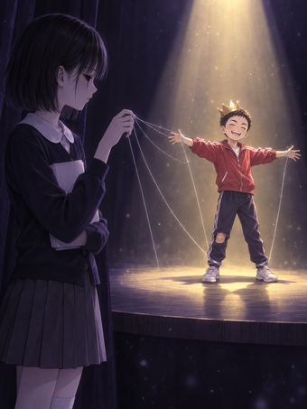
#20 · E1-15 3:4
상징적인 상상 장면. 어두운 청보라 단색의 무대. 화면 왼쪽 아래 무대 옆 그늘에 대본을 왼팔로 안은 세아가 서서 무대를 바라본다(옆얼굴). 무대 한가운데, 위에서 떨어지는 노란 스포트라이트 아래 금색 종이 왕관을 쓴 작은 임금님 진우가 두 팔을 벌리고 서 있다. 진우의 두 손목과 두 발목에 가느다란 은빛 실이 매여 있고, 그 실들은 허공을 가로질러 세아의 오른손 손가락 끝으로 이어진다. 세아의 눈은 하이라이트 없는 검은 눈.
- 하지만 이야기는, 해설이 한다.
그날 저녁
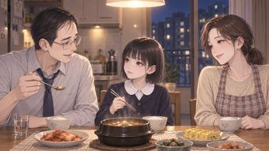
#21 · E1-16 16:9
2006년 아파트 부엌의 작은 식탁, 저녁. 따뜻한 노란 펜던트 등 아래 된장찌개 뚝배기, 김치, 계란말이, 밥공기 세 개. 왼쪽에 아빠(와이셔츠, 느슨한 넥타이), 오른쪽에 엄마, 안쪽 가운데 자리에 세아. 아빠가 숟가락을 든 채 세아에게 말을 거는 중이고 세아는 젓가락을 들고 아빠를 본다. 창밖은 푸른 밤과 맞은편 아파트 불빛.
- 학예회? 우리 세아는 무슨 역 하는데?
- 해설이요.
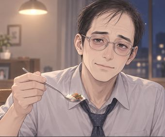
#22 · E1-17 9:16 · 2컷 중 1
아빠의 상반신 클로즈업. 숟가락을 든 채 지친 듯 순하게 웃는다. 둥근 안경, 느슨한 넥타이, 따뜻한 전등빛.
- 잘했다.
- 괜히 나서는 역 하지 마. 가만히 있으면 중간은 가.
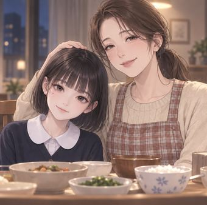
#23 · E1-17R 9:16 · 2컷 중 2
식탁. 엄마가 옆자리 세아의 머리를 왼손으로 쓰다듬고, 세아는 고개를 살짝 기울여 착하게 웃는다.
- 우리 세아는 착해서 걱정이 없어.
- 응.
엄마 아빠에게는 / 괜찮은 딸만 보여 준다.
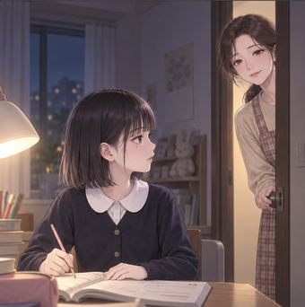
#24 · E1-18 9:16 · 2컷 중 1
밤, 세아의 방. 책상 스탠드 불빛. 세아는 책상에 앉아 문제집을 펴고 연필을 든 채 문 쪽으로 고개만 돌린다. 방문이 반쯤 열리고 엄마가 문틈으로 얼굴과 어깨를 내밀었다(갸웃하는 표정).
- 세아야, 혹시 엄마 지갑에서 만 원짜리 한 장 못 봤어?
- 아니? 엄마가 또 어디 뒀겠지.
- 그런가…? 엄마가 요즘 정신이 없네.
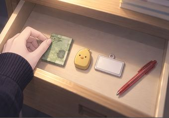
#25 · E1-18 9:16 · 2컷 중 2
클로즈업: 스탠드 불빛 아래 열린 책상 서랍 안. 반으로 접은 초록빛 지폐 한 장(세부 무늬는 흐릿하게), 노란 병아리 모양 지우개, 글자 없는 흰 플라스틱 이름표, 빨간 볼펜 한 자루가 서랍 바닥에 일렬로 가지런히 놓여 있다. 아이의 손가락 끝(남색 카디건 소매)이 지폐의 모서리를 반듯하게 맞춘다.
돈이 필요했던 건 아니다.
엄마가 '내가 잊어버렸나 보다' 하고 / 웃는 얼굴이, 좋았을 뿐이다.
일주일 뒤, 첫 연습
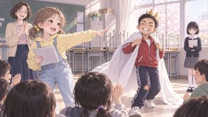
#26 · E1-19 16:9
연습 시간. 책상을 모두 뒤로 밀어 붙인 교실. 금색 종이 왕관을 쓰고 흰 이불을 망토처럼 두른 진우가 가슴을 펴고 거들먹거리며 걷는다. 화면 앞쪽에 선 유리가 대본을 쥔 채 진우를 손가락으로 가리키며 입을 크게 벌려 또렷하게 외친다(자신감 있는 얼굴). 바닥에 앉은 아이들이 손뼉을 치고, 교실 앞쪽 정미란 선생님도 활짝 웃으며 박수 친다. 세아는 화면 오른쪽 끝 창가에 서서 대본을 들고 지켜본다(작게).
- 임금님은 벌거벗었어요!
- 와아, 유리 잘한다!
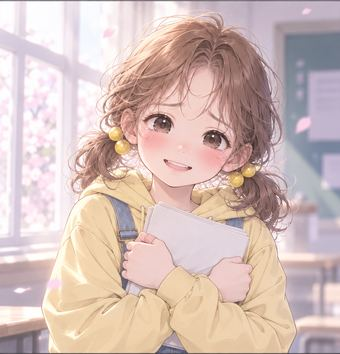
#27 · E1-20 9:16 · 2컷 중 1
유리가 대본을 가슴에 꼭 안고, 볼이 빨개진 채 수줍고 기쁘게 웃는다. 눈이 반짝인다.
- 나… 잘했어?
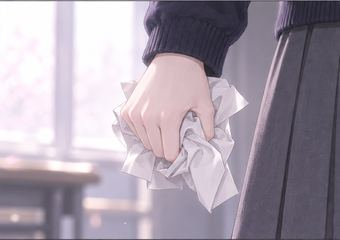
#28 · E1-20 9:16 · 2컷 중 2
클로즈업: 세아의 오른손이 들고 있던 대본 종이를 천천히 꽉 구긴다. 아이의 작은 손, 다섯 손가락, 구겨지는 종이 주름, 남색 카디건 소매 끝. 배경은 흐릿한 창빛.
- 꾸깃
유리는 잘했다.
너무 잘했다.
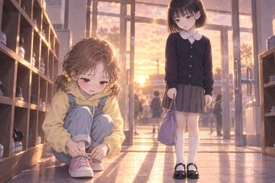
#29 · E1-21 3:2
방과 후 학교 중앙 현관의 낡은 나무 신발장. 노을빛 주황 역광이 유리문으로 길게 들어와 바닥에 긴 그림자가 진다. 유리는 신발장 앞에 쪼그려 앉아 분홍 운동화 끈을 묶고, 세아는 실내화 주머니를 들고 선 채 유리를 내려다본다.
- 유리야.
- 응?
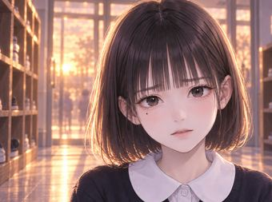
#30 · E1-22aR 9:16 · 2컷 중 1
세아의 얼굴 클로즈업. 걱정하는 듯 눈썹을 살짝 모은 부드러운 표정으로 말을 꺼낸다. 노을 역광에 머리카락 윤곽이 주황빛.
- 아까 너 대사할 때… 애들이 웃었던 거 알아?
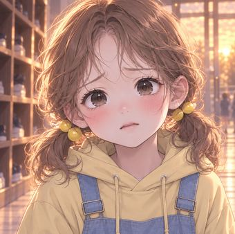
#31 · E1-22bR 9:16 · 2컷 중 2
유리의 얼굴 클로즈업. 웃음이 사라지며 표정이 굳는다, 당황해 흔들리는 눈.
- …어?
- 나, 잘했는데… 다들 박수 쳤잖아…
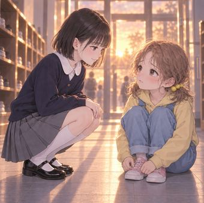
#32 · E1-23aR 9:16 · 2컷 중 1
미디엄 숏. 세아가 쪼그려 앉은 유리 쪽으로 몸을 숙여 낮은 목소리로 말한다, 다정한 척하는 얼굴. 유리는 고개를 들어 세아를 본다.
- 그거, 웃겨서 친 거야.
- 너 목소리 엄청 떨렸어.
- 진우가 뒤에서 흉내도 냈어.
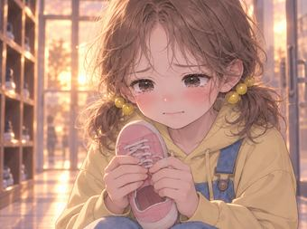
#33 · E1-23bR 9:16 · 2컷 중 2
유리가 분홍 운동화 한 짝을 두 손에 든 채 눈에 눈물이 그렁그렁 맺히고 아랫입술을 깨문다.
- 진짜…?
- 나… 몰랐어…
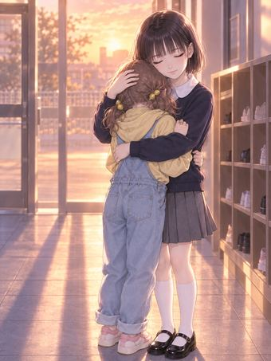
#34 · E1-24 3:4
신발장 앞. 세아가 유리를 두 팔로 꼭 안아 준다. 유리는 세아의 어깨에 얼굴을 묻고 울어서 얼굴이 거의 보이지 않는다(양 갈래 머리만). 세아의 얼굴은 유리의 어깨 너머로 화면을 향하고, 부드럽게 눈을 감고 있다. 노을 역광, 바닥에 길게 늘어진 두 아이의 그림자가 하나로 겹친다.
- 내가 연습 도와줄게.
- 대신 이건 우리 둘만의 비밀이야.
- 꼬옥
- 괜찮아, 내가 있잖아.
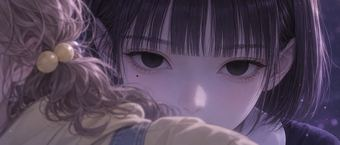
#35 · E1-25 21:9
가로로 긴 극단적 클로즈업. 화면 왼쪽 아래에 유리의 갈색 곱슬머리와 어깨가 흐릿하게 걸리고, 그 너머로 세아의 눈과 코끝까지만 보인다 — 눈을 뜨고 무표정하게 똑바로 화면을 응시한다. 눈동자에 하이라이트가 전혀 없는 빛 없는 검은 눈. 일자 앞머리, 오른쪽 눈 아래 작은 점, 얼굴 위쪽에 청보라 그늘.
아무도 웃지 않았다.
2화 「벌거벗은 임금님」
학예회 당일, 무대 위에서 얼어붙은 유리. 세아는 그 대사를 가져가고, 박수 속에서 진우가 무대 아래로 떨어진다. 그리고 보건실에서, 진우가 웃는다.
학예회 일주일 전, 방과 후 음악실
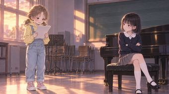
#01 · E2-01R 16:9
방과 후 텅 빈 초등학교 음악실. 노을빛이 창으로 비스듬히 들어온다. 낡은 갈색 업라이트 피아노, 벽의 오선 칠판, 쌓아 둔 의자들. 화면 왼쪽에 유리가 대본을 두 손으로 들고 서서 어깨를 잔뜩 움츠린 채 대사를 외친다. 화면 오른쪽에 세아가 피아노 의자에 다리를 꼬고 앉아 팔짱을 끼고 유리를 본다.
- 임, 임금님은… 벌거벗었어요!
- 또 떨렸어.
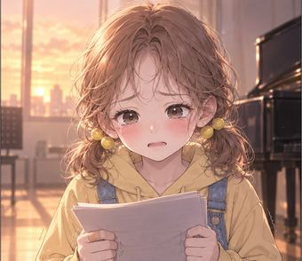
#02 · E2-02 9:16 · 2컷 중 1
유리 클로즈업: 이마에 맺힌 땀, 대본을 쥔 두 손이 떨리고, 입을 벌리다 멈춘 얼굴. 노을 빛.
- 임금님은 벌거벗…
- 덜덜
- 다시.
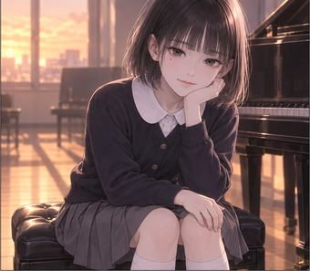
#03 · E2-02 9:16 · 2컷 중 2
세아가 피아노 의자에서 왼손으로 턱을 괴고 고개를 기울인 채 부드럽게 웃는다. 입은 웃는데 눈은 웃지 않는다.
- 유리야, 너 진짜 긴장하면 다 잊어버리는구나.
나는 유리를 도와주고 싶었다.
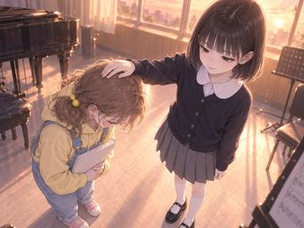
#04 · E2-03 4:3
연습이 끝나고 유리가 세아 앞에서 고개를 꾸벅 숙여 인사한다. 세아가 그런 유리의 정수리에 손바닥을 얹어 쓰다듬는데, 마치 머리를 아래로 누르는 것처럼 보인다(유리의 고개가 더 깊이 숙여져 있다). 세아는 위에서 내려다보며 평온하게 웃는다. 노을 역광, 음악실.
- 응. 나 아니면 넌 못 해.
- 꾸욱
- 고마워, 세아야. 너 아니었으면 나…
정말로.
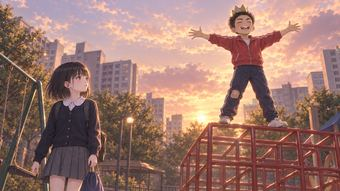
#05 · E2-04 16:9
해 질 녘 아파트 단지 놀이터. 빨간 정글짐 꼭대기에 금색 종이 왕관을 쓴 진우가 서서 두 팔을 활짝 벌리고 하늘을 향해 외친다. 노을, 배경에 아파트 동들. 화면 왼쪽 아래 그네 옆을 지나가던 세아(책가방, 실내화 주머니)가 걸음을 멈추고 진우를 올려다본다.
- 짐은! 세상에서 가장 아름다운 옷을 입었노라!!
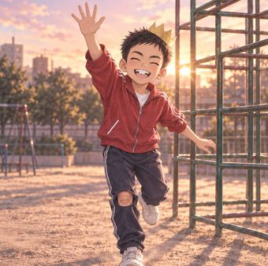
#06 · E2-05R 9:16 · 2컷 중 1
정글짐에서 뛰어내려 착지하며 화면 쪽(세아 쪽)으로 오른손을 크게 흔드는 진우, 앞니가 보이게 활짝 웃는다. 종이 왕관이 삐뚤어졌고 무릎에 밴드.
- 어! 권세아! 해설! 너도 같이 연습할래?
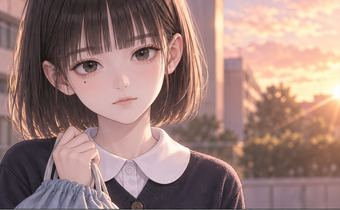
#07 · E2-05 9:16 · 2컷 중 2
세아의 무표정한 얼굴 클로즈업, 실내화 주머니 끈을 쥐고 있다. 노을 역광.
- …아니.
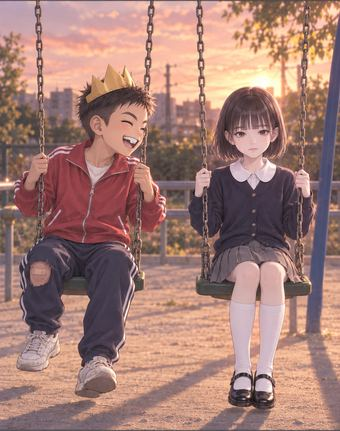
#08 · E2-06 9:16 · 2컷 중 1
그네 두 개에 나란히 앉은 진우와 세아. 진우는 종이 왕관을 쓴 채 세아 쪽으로 몸을 돌려 활짝 웃으며 말하고, 세아는 정면만 본다. 노을.
- 넌 진짜 목소리 좋더라.
- 나중에 나 대통령 되면, 네가 내 연설문 써 줘라!
#09 · E2-06F 9:16 · 2컷 중 2
가로로 긴 극단적 클로즈업: 세아의 옆얼굴(눈과 콧날), 노을 역광 속 차가운 눈매.
- 멍청이.
학예회 날
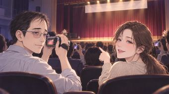
#10 · E2-07R 16:9
학예회 날 초등학교 강당. 어두운 객석을 가득 메운 학부모들, 몇몇은 디지털카메라와 캠코더를 들었다. 앞쪽 줄에 세아 아빠(회사에서 바로 온 와이셔츠와 넥타이)가 은색 캠코더를 들고, 옆자리 엄마(외출용 블라우스, 앞치마 없음)가 무대를 가리키며 아빠에게 말한다. 무대의 붉은 벨벳 커튼은 닫혀 있고 무대 위쪽에 글자 없는 흰 현수막.
- 세아는 어디 나와?
- 해설이래요, 해설. 무대 옆에 서 있대.
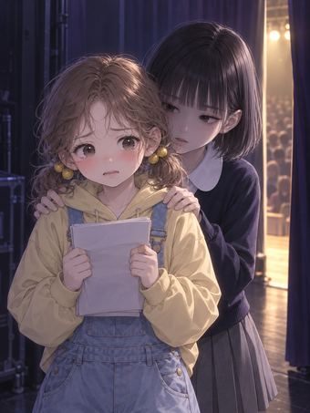
#11 · E2-08 3:4
무대 뒤 어두운 대기 공간. 커튼 틈으로 객석의 빛이 한 줄기 새어 든다. 유리가 대본을 두 손으로 쥐고 겁에 질려 떨고 있고, 바로 뒤에서 세아가 유리의 두 어깨에 손을 얹고 유리의 귀에 입을 가까이 대고 속삭인다. 세아의 얼굴은 반쯤 어둠에 잠겨 있다.
- 유리야, 저기 봐. 엄마들 다 왔어.
- 지난번처럼 떨면… 다들 웃겠지?
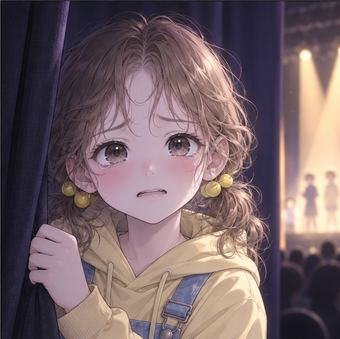
#12 · E2-09 9:16 · 2컷 중 1
유리의 얼굴 클로즈업: 창백하게 질려 동공이 흔들리고 입술이 떨린다. 어둠 속 커튼 틈 빛.
- 덜덜
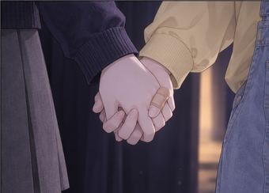
#13 · E2-09 9:16 · 2컷 중 2
클로즈업: 세아의 오른손이 유리의 왼손에 깍지를 껴 꼭 잡는다. 유리의 검지에 살구색 반창고. 남색 카디건 소매와 노란 후드티 소매. 어둠.
- 괜찮아. 못 하겠으면 안 해도 돼.
- 꼬옥
- 내가 있잖아.
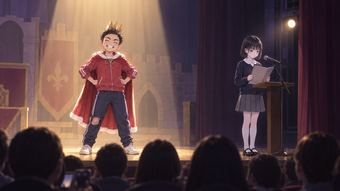
#14 · E2-10 16:9
막이 오른 학예회 무대를 객석 뒤쪽에서 본 넓은 구도. 무대 한가운데 노란 스포트라이트 아래, 금색 종이 왕관과 빨간 망토를 두른 진우가 허리에 두 손을 얹고 거드름을 피운다. 무대 오른쪽 끝 가장자리, 작은 나무 보면대(해설대)와 스탠드 마이크 앞에 세아가 대본을 펼쳐 들고 서 있다(무대 옆 그늘, 작은 조명 하나). 화면 아래쪽에 객석 앞줄 학부모들의 뒤통수 실루엣.
- 옛날 옛적, 새 옷을 무척 좋아하는 임금님이 살았습니다.
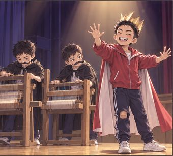
#15 · E2-11 9:16 · 2컷 중 1
무대 위. 짧은 검은 머리의 남자아이 둘(사기꾼 재단사 역, 검은 망토에 종이로 만든 콧수염)이 텅 빈 나무 베틀 앞에서 실을 짜는 시늉을 하고, 금색 종이 왕관에 빨간 망토를 두른 진우가 허공을 두 손으로 쓰다듬으며 과장되게 감탄한다. 이 컷에 여자아이는 한 명도 나오지 않는다. 재단사 두 명은 진우와 다른 얼굴의 남자아이다.
- 이 옷은 바보 눈에는 보이지 않는답니다~
- 오오! 정말 아름답구나!
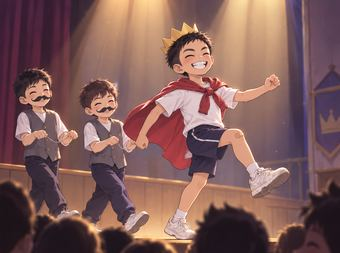
#16 · E2-11R 9:16 · 2컷 중 2
행진 장면: 흰 반팔 티셔츠와 남색 반바지 차림에, 빨간 체육복 상의를 소매로 목에 묶어 망토처럼 등 뒤로 늘어뜨렸다. 금색 종이 왕관을 쓴 진우가 가슴을 쭉 펴고 무릎을 높이 들며 행진한다(연극 속 '보이지 않는 옷'). 뒤에서 짧은 머리 남자아이 둘(신하 역, 회색 조끼)이 보이지 않는 옷자락을 받쳐 드는 시늉. 무대 아래 객석의 웃는 얼굴 실루엣. 이 컷에 여자아이는 나오지 않는다.
- 와하하
- 그때, 한 아이가 외쳤습니다.
#17 · E2-12 3:4
무대 앞쪽 가장자리, 위에서 떨어지는 강한 흰 핀 조명 하나 아래 유리 혼자 서 있다. 입을 반쯤 벌린 채 얼어붙었고, 대본을 쥔 두 손이 떨린다. 주변은 칠흑같이 어둡다. 화면 아래 어둠 속에 객석의 희미한 얼굴 몇 개가 유리를 올려다본다.
- 덜덜
……
1초.
2초.
3초.
#18 · E2-13 9:16 · 2컷 중 1
무대 옆 커튼 뒤에서 정미란 선생님이 몸을 반쯤 내밀고, 두 손을 입가로 모아 입모양으로 다급하게 신호를 보낸다. 눈썹이 치켜 올라간 초조한 얼굴.
- 유리야, 말해! 어서!
#19 · E2-13B 3:2
어두운 강당 객석. 학부모들이 서로 귓속말하며 웅성거린다. 가운데 앞줄에 유리 엄마가 두 손을 가슴 앞에서 맞잡고 걱정스럽게 무대를 올려다본다. 유리 엄마: 30대 후반 여자, 안경을 쓰지 않았고, 어깨 길이의 밝은 갈색 곱슬머리를 낮게 하나로 묶었다, 유리처럼 팔자로 처진 눈썹과 동그란 눈, 연노랑 니트. 주변 학부모는 평범한 외출복의 어른들(안경 쓴 파마머리 여자는 넣지 않는다).
- 뭐야, 왜 저래?
- 대사 까먹었나 봐…
- 웅성웅성
#20 · E2-14 9:16 · 2컷 중 1
해설대 앞 세아의 얼굴 클로즈업. 무대 위 유리 쪽을 보던 시선을 천천히 객석 쪽으로 옮기는 순간. 얼굴 반쪽에 무대 조명, 반쪽은 그늘. 고요하고 침착한 얼굴.
#21 · E2-14R 9:16 · 2컷 중 2
세아가 스탠드 마이크에 입을 가까이 대고 또렷하게 말한다(옆모습). 손에 든 대본 너머 멀리, 무대 가운데에 고개를 숙인 유리의 흐린 실루엣.
- '임금님은 벌거벗었어요!'
아이의 외침에, 사람들은 그제야 진실을 말하기 시작했습니다.
#22 · E2-15R 16:9
무대 쪽에서 객석을 바라본 구도. 학부모들이 안도하며 웃고, 몇몇은 일어나 크게 박수 친다. 앞줄 세아 아빠는 은색 캠코더를 든 채 감격한 얼굴이고 옆의 엄마는 활짝 웃으며 손뼉을 친다.
- 짝짝짝
- 짝짝짝
#23 · E2-16 9:16 · 2컷 중 1
무대 옆 커튼 뒤에서 정미란 선생님이 화면 쪽을 향해 오른손 엄지를 치켜들고 활짝 웃는다.
- 세아야, 잘했어!
#24 · E2-16R 9:16 · 2컷 중 2
무대 가운데, 고개를 푹 떨군 유리가 혼자 서 있다. 대본이 손에서 늘어진다. 스포트라이트는 이미 무대 옆 해설대 쪽으로 옮겨 갔고, 유리는 반쯤 어둠 속에 남아 있다.
아무도 유리를 보지 않았다.
#25 · E2-17 4:3
박수에 신이 난 진우-임금님(흰 반팔 티셔츠와 남색 반바지, 금색 종이 왕관)이 객석을 향해 꾸벅꾸벅 인사하며 뒷걸음질로 무대 오른쪽 끝 해설대 쪽으로 다가간다. 무대 끝 너머는 1미터쯤 아래의 강당 바닥. 해설대 앞에 선 세아는 대본을 든 채 다가오는 진우의 등을 본다.
- 감사합니다~! 감사합니다~!
#26 · E2-18R 16:9
무대 바닥 높이의 극단적 로우 앵글 클로즈업. 화면 오른쪽: 해설대 아래로 드리운 검은 천 자락 끝, 그 아래로 아주 살짝 나와 있는 아이의 광택 나는 검은 메리제인 구두 앞코와 흰 양말. 화면 왼쪽에서 뒷걸음질 치는 아이의 낡은 흰 운동화 뒤꿈치가 그 구두 앞코 바로 앞까지 다가와 있다. 둘은 아직 닿지 않았다. 무대 바닥 나뭇결, 무대 가장자리의 노란 바닥 조명.
#27 · E2-19R 3:4
무대 아래 객석 쪽에서 올려다본 앵글. 진우가 무대 끝에서 뒤로 넘어가 공중에 뜬 순간 — 두 팔이 허공을 휘젓고 놀란 얼굴, 금색 종이 왕관이 머리에서 벗겨져 날아간다. 진우의 옷: 흰 반팔 티셔츠와 남색 반바지 차림에, 빨간 체육복 상의를 소매로 목에 묶어 망토처럼 등 뒤로 늘어뜨렸다(긴 바지가 아니라 맨다리에 흰 운동화). 화면 위쪽 무대 위, 해설대 앞의 세아는 그늘 속 실루엣으로 꼼짝 않고 서 있다.
- 어?
- 휘청
#28 · E2-20A 4:3
강당 바닥(무대 아래)에 쓰러진 진우가 두 손으로 턱을 감싸 쥐고 몸을 웅크린다. 손가락 사이로 붉은 피가 조금 비친다. 진우의 옷: 흰 반팔 티셔츠와 남색 반바지 차림에, 빨간 체육복 상의를 소매로 목에 묶어 망토처럼 등 뒤로 늘어뜨렸다(맨다리, 흰 운동화). 뒤쪽 객석에서 학부모들이 일어나고 정미란 선생님이 놀란 얼굴로 달려온다.
- 진우야!
#29 · E2-20R 9:16 · 2컷 중 2
바닥 높이 클로즈업: 강당 나무 바닥을 굴러온 금색 종이 왕관이 아이의 검은 메리제인 구두 앞에 멈춘다. 왕관이 살짝 찌그러졌다.
- 데구르르
#30 · E2-21 3:4
세아가 몸을 숙여 금색 종이 왕관을 두 손으로 주워 들고 내려다본다. 아주 옅은 미소, 하이라이트 없는 검은 눈. 주변의 소란(달려가는 어른들)은 흐릿한 실루엣. 화면은 청보라로 가라앉았고 왕관의 금색만 빛난다.
나는 발을 뻗었을까?
기억나지 않는다.
다만 왕관은, / 생각보다 가벼웠다.
2026년
#31 · E2-22R 16:9
2026년 국회 의원회관 사무실. 열린 책상 서랍 속 서류 파일 위에 구겨지고 빛바랜 낡은 금색 종이 왕관이 놓여 있다. 성인 여자의 오른손(가는 은색 손목시계, 차콜 정장 소매)이 서랍 손잡이를 잡고 서랍을 닫으려 한다. 차가운 형광등의 회청 톤.
그 왕관은, / 지금도 내 서랍에 있다.
보건실 앞
#32 · E2-23R 9:16 · 2컷 중 1
보건실 앞 복도. 정미란 선생님이 오른손을 가슴에 얹고 확신에 찬 얼굴로 학부모 두 명(세아 엄마, 유리 엄마)에게 설명한다. 엄마들은 고개를 끄덕인다.
- 선생님이 다 봤어요. 진우가 장난치다가 떨어진 거예요.
#33 · E2-23 9:16 · 2컷 중 2
복도 벽 앞 긴 나무 의자. 유리가 두 손으로 얼굴을 가리고 울고, 옆에 앉은 세아가 유리의 등을 손바닥으로 천천히 쓸어 준다. 세아의 얼굴은 평온하다.
- 나 때문이야… 내가 대사를 안 해서…
- 응, 맞아.
- 그래도 괜찮아. 내가 있잖아.
#34 · E2-24R 4:3
초등학교 보건실 안. 흰 커튼, 약품 선반, 창빛. 침대에 걸터앉아 다리를 흔드는 진우, 턱에 큼직한 흰 거즈를 붙였다(흰 반팔 티셔츠 위에 빨간 체육복 상의를 걸침). 진우는 문 쪽을 보며 활짝 웃는다. 문간에 선 세아는 두 손을 등 뒤로 감췄고, 등 뒤로 금색 종이 왕관의 끝이 살짝 보인다.
- …괜찮아? 많이 아파?
- 어! 세아다! 해설 진짜 멋있었어!
- 응! 꿰매야 된대. 흉 남을 거래, 헤헤.
근데 세아야.
#35 · E2-25A 4:3
보건실. 진우의 얼굴 클로즈업, 턱에 흰 거즈. 입꼬리는 올라가 웃고 있지만 눈은 전혀 웃지 않는다: 눈꺼풀이 반쯤 내려온 무표정한 눈, 눈동자가 화면 정면을 똑바로 응시한다. 얼굴 위쪽 절반에 창틀 그림자가 드리워 어둡고, 아래쪽 웃는 입만 창빛에 밝다. 소름 끼치게 차분한 얼굴. 빨간 체육복 상의.
- 나 봤어.
…뭘?
#36 · E2-25 9:16 · 2컷 중 2
가로로 긴 극단적 클로즈업: 진우의 입가와 턱의 거즈. 속삭이듯 조용히 움직이는 입술, 입꼬리는 올라가 있다.
- 네 발.
#37 · E2-26 21:9
가로로 긴 극단적 클로즈업: 세아의 두 눈이 크게 뜨이고 작은 동공이 흔들린다. 처음 드러나는 두려움. 하이라이트 없는 눈, 일자 앞머리, 오른쪽 눈 아래 작은 점, 얼굴 위에 청보라 그늘.